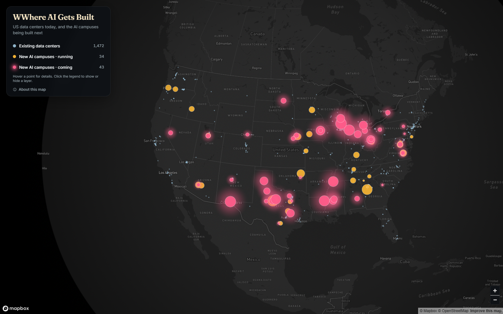

Day 01 · Points · interactive
Where AI Gets Built
US data centers today, and the AI campuses being built next
The Cloud Has a Footprint follows America's data centers, the ones running today and the giant AI campuses on the way, into the water, power and climate risk around them. City Senses is the lighter thread: how New York, Philadelphia, DC, San Francisco, Austin and Seattle look, sound and taste on a map.

US data centers today, and the AI campuses being built next